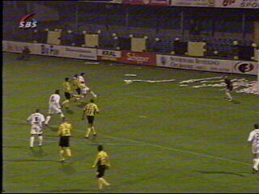
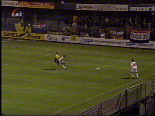
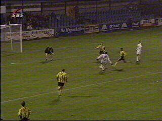

|
SV Veendam - Roda JC (0-5) 5 november 2002 |

Anastasiou scoort 0-1

De Roda-supporters.
Survivors of the Lange Leegte!
Cristiano kopt 0-2 binnen

Sonko scoort op aangeven van Vicelich.
Anastasiou scoort zijn tweede, 0-4 (82').
Vingeroefening voor aanstaande vrijdag....
Alweer Anastasiou, 0-5
© Koempels
Pleasure Dome